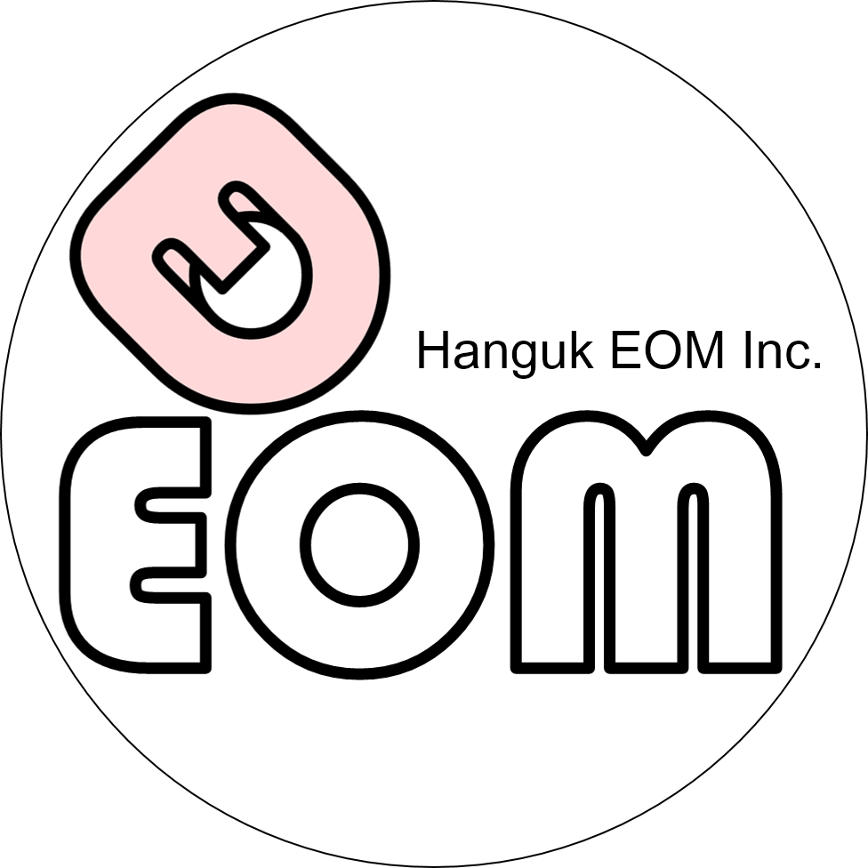
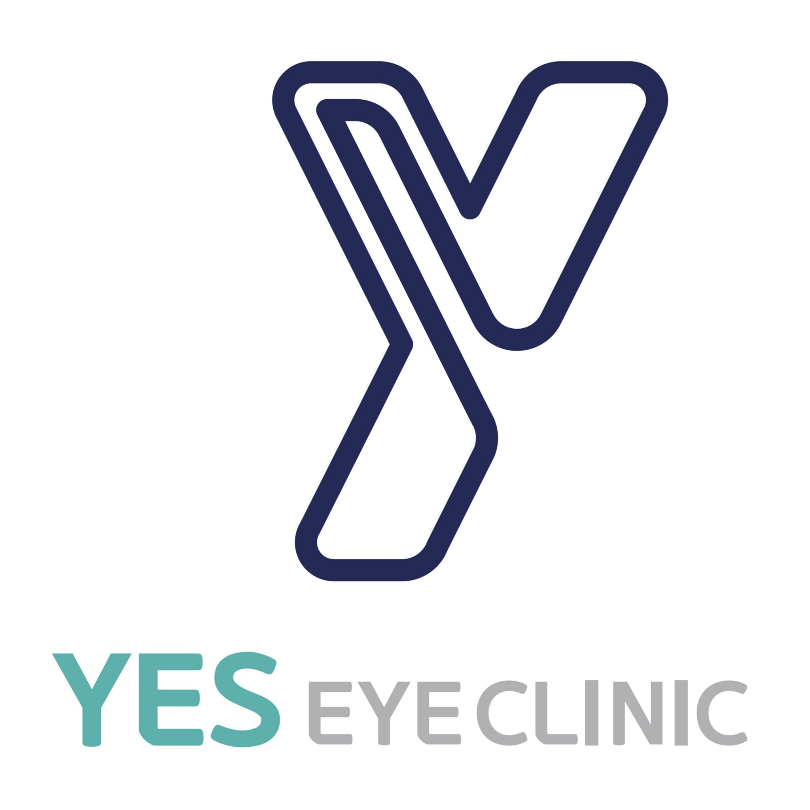

OSDI Calculator
Ocular Surface Disease Index · 지난 1주일 동안의 증상을 기준으로 선택하세요.


—
/ 100
응답을 선택하세요
0 / 12 문항 응답
초기화
결과 복사
OSDI 점수 = (응답한 문항 점수의 합 × 25) ÷ 점수 계산에 포함된 문항 수. 문항 6–9의 해당 없음(N/A)과 미응답 문항은 계산에서 제외됩니다. 본 도구는 점수 계산 보조용이며 임상적 판단을 대체하지 않습니다.